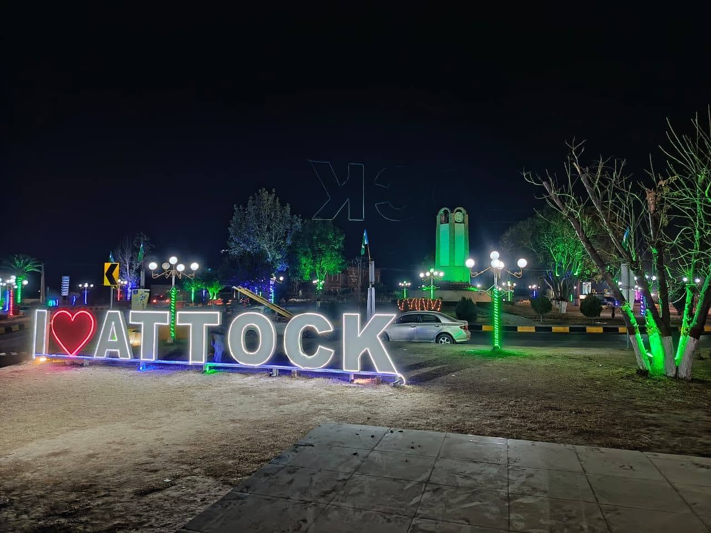

Rawalpindi Division · headquarters Attock City · six tehsils on the Indus, Soan and Haro · PBS 2023

Attock District is one of the 41 districts of Punjab, with its headquarters at Attock. It has 6 tehsils: Attock, Fateh Jang, Hasan Abdal, Hazro, Jand and Pindi Gheb. The 2023 census counted 2,170,423 people on 6,857 km², and 70.22% of residents aged 10 and over were literate.
| Name | Type | Population | Area (km²) | Urban | Literacy (10+) |
|---|---|---|---|---|---|
| Attock | Tehsil | 516,277 | 1,002 | 56.19% | 74.8% |
| Fateh Jang | Tehsil | 374,726 | 1,249 | 21.7% | 66.94% |
| Hasan Abdal | Tehsil | 253,670 | 350 | 27.41% | 70.22% |
| Hazro | Tehsil | 386,544 | 348 | 16.29% | 66.45% |
| Jand | Tehsil | 330,328 | 2,043 | 17.03% | 71.59% |
| Pindi Gheb | Tehsil | 308,878 | 1,865 | 20.66% | 70.36% |
Attock is Punjab’s north-west corner, where the Grand Trunk Road and the railway cross the Indus. Attock Fort stands on the left bank. Campbellpur was the older colonial name for the headquarters town; Attock City is the name in use now. Behind the river the district is Potohar plateau, the Kala Chitta ridge, and rainfed wheat country.
The detailed 2023 census table commonly cited for Attock District records 2,170,423 people in 353,973 households. Some shorter public summaries print 2,133,005. Area is 6,857 km². Density is about 316 people per km². About 1.55 million residents are rural and about 624,000 are urban.
Literacy for ages 10 and above is 70.22 percent — 79.69 percent for men and 60.66 percent for women. Children under ten are a little over one-fifth of the surveyed population. Phone code 057. Postal code 43600. District administration site: attock.punjab.gov.pk.
Attock tehsil — about 1,002 km² and 516,277 people (2023). Headquarters belt. Literacy near 75 percent. Kamra and the river villages sit in this tehsil.
Hazro — about 348 km² and 386,544 people, the densest tehsil. Literacy near 66 percent. Chhachh plain toward the river gardens.
Hassan Abdal — about 350 km² and 253,670 people. GT Road town. Gurdwara Panja Sahib is here.
Fateh Jang — about 1,249 km² and 374,726 people. Literacy near 67 percent. Plateau between the Haro and Soan catchments.
Pindi Gheb — about 1,865 km² and 308,878 people. Drier western tract. Literacy near 70 percent.
Jand — about 2,043 km² and 330,328 people, the largest tehsil by land and the thinnest by density. Literacy near 72 percent.
Published union-council lists for the district sit in the low seventies.
The Indus bounds the west and north-west. The Haro comes in from the Hazara side. The Soan cuts the plateau. The Kala Chitta range sits between the northern tehsils and the drier south. Most farmland is barani (rainfed). Wheat and oilseed are the main crops; livestock is a large part of household work. Other local workplaces include limestone and cement, Attock’s oil field and refinery, and the Pakistan Aeronautical Complex at Kamra.
On the 2023 mother-tongue table, Punjabi — including local Potohari speech — is the largest row, about 1.39 million speakers. Pashto is next, about 332,000. Hindko is close behind, about 307,000. Urdu is a smaller urban and school row.
Government school lists for the district run well over a thousand campuses, with public enrolment in the low hundreds of thousands. Degree options include government graduate and women’s colleges in Attock, Fateh Jang, Pindi Gheb, Jand, Hazro and Hassan Abdal; a University of Education campus; COMSATS Attock; and the Air University aerospace campus at Kamra. Cadet College Hasan Abdal is in Hassan Abdal tehsil. Many students still go to Rawalpindi, Islamabad and Taxila for specialised degrees.
The main public hospital is the DHQ in Attock City (IYB District Hospital). Tehsil headquarters hospitals operate in Hazro, Hassan Abdal, Fateh Jang, Jand and Pindi Gheb, with RHCs and BHUs behind them. Specialist cases are often referred to Rawalpindi teaching hospitals. Rural schools in the drier tehsils have reported teacher shortages into 2026.
Attock City, Kamra, Hazro, Hassan Abdal, Fateh Jang, Pindi Gheb, Jand, Ghorghushti, and the Indus-side villages below the fort.
Sources: Pakistan Bureau of Statistics 2023 district and tehsil tables; Government of Punjab, District Attock profile; 2023 mother-tongue table. Checked September 2026.
Attock District has 6 tehsils: Attock, Fateh Jang, Hasan Abdal, Hazro, Jand and Pindi Gheb.
The 2023 census counted 2,170,423 people in Attock District, up from 1,886,378 in 2017 (annual growth 2.37%). 28.75% of the population lived in urban areas.
Attock District covers 6,857 km² according to the 2023 census, a density of 316.53 people per km².
The 2023 census lists 11 urban localities in Attock District; the ten largest are Attock (142,826, municipal committee), Fateh Jang (81,321, municipal committee), Hasan Abdal (69,529, municipal committee), Kamra Cantonment (67,425, cantonment), Pindi Gheb (63,810, municipal committee), Jand (56,254, municipal committee), Hazro (44,242, municipal committee), Mirza (34,378, town committee), Attock Cantonment (33,718, cantonment) and Ghur Ghushti (18,730, municipal committee).
70.22% of people aged 10 and over were literate in the 2023 census (male 79.69%, female 60.66%).
The most common mother tongue in the 2023 census was Punjabi (65.23% of the 2,133,005 people in the mother-tongue table), followed by Pashto (15.59%), Hindko (14.41%), Urdu (2.68%).
Attock District is in Punjab. Its headquarters is Attock.